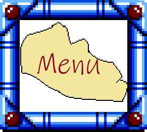

pans-man
son Caractère
pans-man Conçu dès le début comme un robot médical, il est naturellement le plus serieux de ses frêres, très rigoureux et ne manque jamais à faire son travail.
Le travail de pans et son rôle dans le groupe
Pans est robot chirurgien. très habile dans ses fonctions, Il bénéfi"cie des dernières avancées technologique en therme de medecine. sa rigueur permet à ses patiens de guerir de manière spectaculaire... Meme si pans se plaint de ne pas pouvoir se connecter au réseau Du CHR de Lille
ses autres apparition dans la BD Robot'Ch'tis sont dans "universite" où il donne une leçon avec son père; pans s'énerve où il ne montre pas beaucoup de patience
Et dans le quadruple épisode "Bourasque à Lille" "1/4" "2/4" "3/4" et "4/4"
